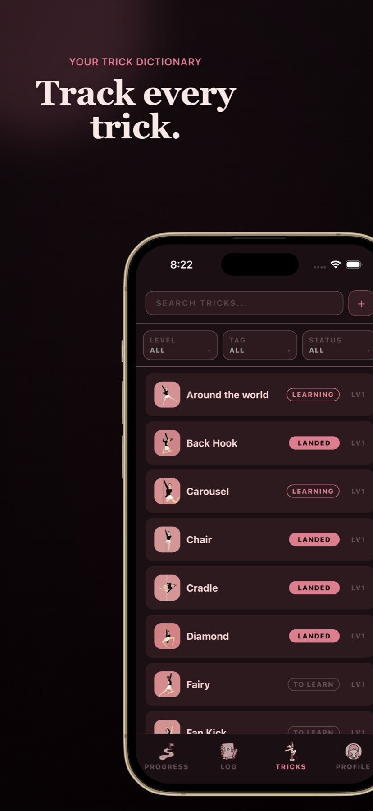
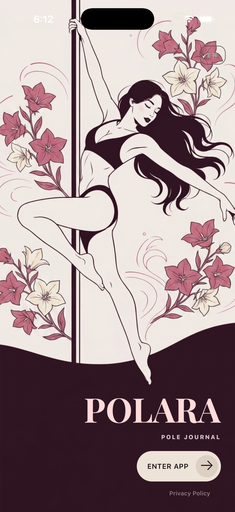
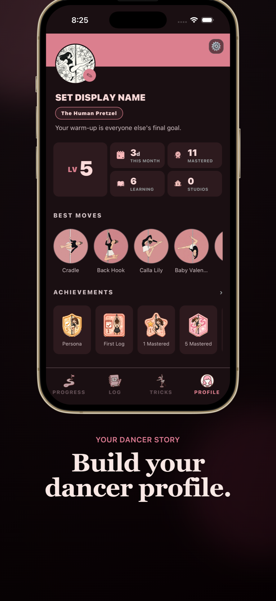
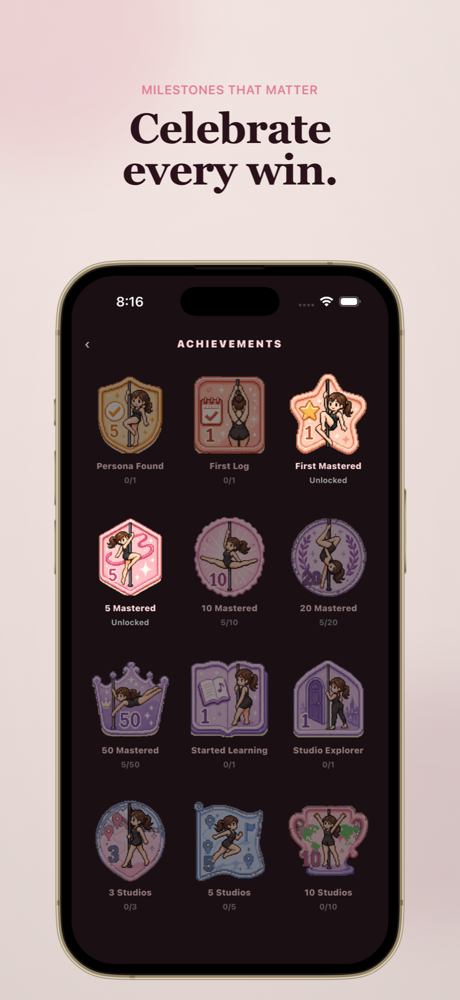

01 / Remember
Give every trick a home.
Keep the moves learned across classes and studios in one searchable place.
Independent Product / iOS / 2026
Never forget a trick.
A private iPhone companion for pole dancers to track every trick, record practice, and see their progress.
Download on the App Store

01 / Remember
Keep the moves learned across classes and studios in one searchable place.

02 / Track
Move naturally from To Learn to Learning to Landed, without turning practice into a score.

03 / Reflect
Connect practice records and milestones into a personal history worth returning to.
Progress is personal. Polara keeps the language clear and lets each dancer decide what “landed” means to them.
Tricks, sessions, plans, and milestones form one continuous record instead of another scattered archive.
No mandatory account. Training data stays local, with user-controlled backup and restore when it is needed.
Designed and built independently with React Native, Expo, TypeScript, and StoreKit.